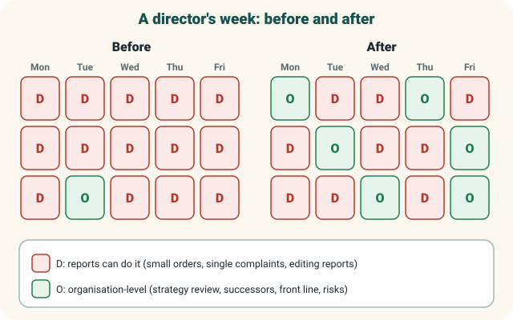

K9 · Leadership and developing others › Level 5 Leading
From managing a team to leading an organisation
This lesson completes Sheet 1: Executive calendar. Print template. This course follows the N5 course. If you have not taken it, start with From specialist to manager.
1. Objectives
- Sort a week's work into work your direct reports can do and organisation-level work.
- Build a 4-week executive calendar with fixed time slots for organisation-level work.
2. Retrieval warm-up
Two review questions from the N5 course.
- What are the three columns of the role-shift sheet?
- What goes on a not-doing list?
Answers
- Let go, keep, start.
- Tasks to stop, tasks to postpone, and a message to your manager with reasons.
Review: N5 course map.
3. Explanation
When you became a manager, you moved from doing work to leading a team. As an executive, you move once more. Now you lead a system: many teams, many layers of managers, many divisions.
Three big shifts.
- From solving problems to designing how problems get solved. You rarely handle incidents yourself. You fix the structure, processes and decision rights so incidents recur less.
- From team results to organisation results. If your division wins and the company loses, you still lose.
- From direct information to information through many layers. News reaching you has already been filtered. You must actively look for the real picture.
Work only an executive can do. If you do not do it, usually nobody does:
- Choose priorities, and what not to do, for the whole organisation.
- Allocate people and money between divisions.
- Design the structure and decision rights.
- Prepare successors for key roles.
- Maintain relationships with the board, major partners and regulators.
- Watch the organisation's major risks.

The "pull-down" trap. When something goes wrong, you jump in and handle it for your reports. It gets done fast, but your reports do not grow. And the organisation-level work is left undone.
Sheet 1. Executive calendar, 3 steps
- Record one real weekEvery task taking 30 minutes or more.
- Label each oneD: direct reports can do it. O: organisation-level work.
- Block 4 weeksFixed slots for O work. Who takes each D task, and when.
How much O work is enough? There is no standard figure for every organisation. Set your own target, measure again after 4 weeks, and adjust.
4. Workplace example
Hypothetical scenario. Daniel is operations director of a chain of 40 bakeries. Four regional managers report to him.
He records one week. He approves every purchase order above a small threshold himself. He phones every shop that gets a complaint. He edits each region's weekly report.
He labels the tasks. Almost all are D. The only O task is a meeting with the finance director.
He completes Sheet 1. Hand over: orders up to a higher threshold are approved by regional managers; complaints are handled by the regions, with serious cases reported to him. O slots: Monday morning, review the key indicators; Wednesday afternoon, meet 2 potential successors; Friday, visit 2 shops unannounced.
After 4 weeks, O work rises from about a tenth to nearly a third of his calendar. Two regional managers now handle more on their own.
Why this works: he does not just hand work over. He uses the time he regains for work only he can do. He measures again after 4 weeks.
5. Practice
Hypothetical scenario. Helen is director of a garment factory with 1,200 workers. Last week she did the following.
a) Inspected every export shipment. b) Met a major client about next year's orders. c) Scheduled shifts for the cutting team. d) Reviewed the structure of the slow planning department. e) Met the QA head to choose a successor. f) Approved purchases of needles and thread.
Label each D or O. For each D task, note who should take it.
Hint 1
Ask: if she did not do this, would someone else have the authority and information to do it?
Hint 2
A D task may still need her oversight. Add a threshold: when should she be told?
Model answer
- D: a) to QA, telling her when defects exceed a threshold; c) to the cutting supervisor; f) to purchasing, within a spending limit.
- O: b) major client relationship; d) organisation design; e) succession.
- Suggested O slots: Tuesday morning for clients or partners; Thursday afternoon for structure and successors.
(The details are hypothetical.)
6. Self-check
Choose an answer. Every option has an explanation.
Question 1. A warehouse delivered late to a major client. You are the division director. Which is organisation-level work?
-
Not quite. The warehouse manager can do this. If you do it for them, they do not grow.
-
Correct. Correct. Executives fix the system so incidents recur less.
-
Not quite. A major client being affected is an organisational risk. You still need to watch it and fix the cause.
Question 2. Your division beat its target, but by pushing costs onto another division. How do you judge this?
-
Not quite. At executive level, results count for the whole organisation. Shifting costs creates no value.
-
Correct. Correct. If your division wins and the company loses, you still lose.
-
Not quite. Silence does not mean no harm. Information at the top is usually filtered.
Question 3. You label approving small purchase orders as D. What is the right next step?
-
Not quite. Without a clear handover, the task falls into a gap. Nobody knows they may now decide.
-
Correct. Correct. A D task needs an owner, a scope of authority and a point to report back.
-
Not quite. Doing it faster still takes time from organisation-level work.
Question 4. After 4 weeks with the executive calendar, O work still keeps getting pushed aside. What should you do?
-
Not quite. Being pushed aside is data to learn from. Dropping the tool loses your way of measuring.
-
Correct. Correct. Measure, then adjust, is how Sheet 1 works. No ratio fits every organisation.
-
Not quite. This does not fix the cause. D work still fills your main working hours.
7. Reflection
- Last week, which task did you "pull down" and do for a direct report? Why?
- Which organisation-level work is nobody doing right now?
8. Real-world application
In the next 7 days, record one real working week and label each task D or O. Block at least two fixed slots for O work over the next 4 weeks.
Level of evidence. This lesson draws on descriptions of executive capability in public frameworks: UK Civil Service Success Profiles and the APS Integrated Leadership System. Sheet 1 is a tool proposed by this site. The site has found no research that sets an optimal share of time.
9. Metadata
| skill | K9 · Leadership and developing others |
|---|---|
| level | Level 5 · Leading |
| group | N6 |
| framework_map | UK Civil Service Success Profiles: Seeing the Big Picture; Leadership; APS Integrated Leadership System: Shapes strategic thinking; WEF: Leadership and social influence; SkillsFuture CCS: Developing People (reference only) |
| original | Vietnamese version |
| updated | 2026-11-14 |
Finish the lesson
Mark it as done and the site suggests reviews after 1, 3 and 7 days. The data stays on your device only.
Suggested reviews: